I 18 dischi e le top 6
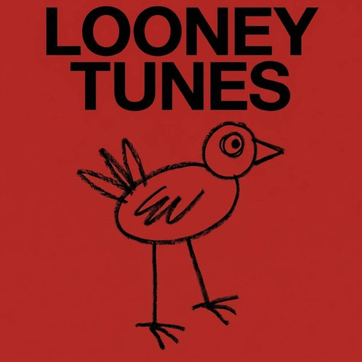
1 Looney TunesAndrea Oliva, Franc Fala, BanKr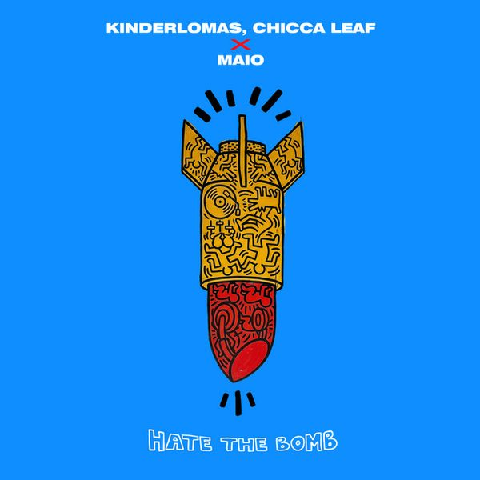
2 Hate The BombKINDERLOMAS, CHICCA LEAF X MAIO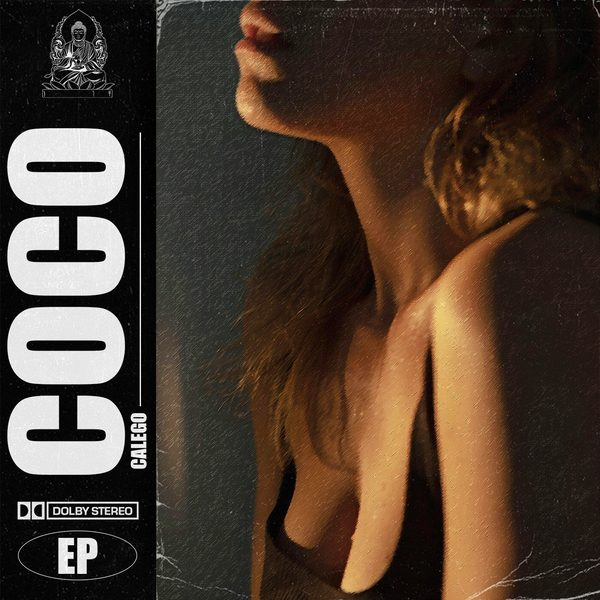
3 CocoCalego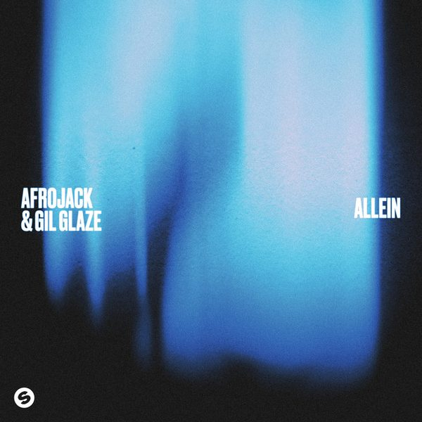
4 AlleinAFROJACK & Gil Glaze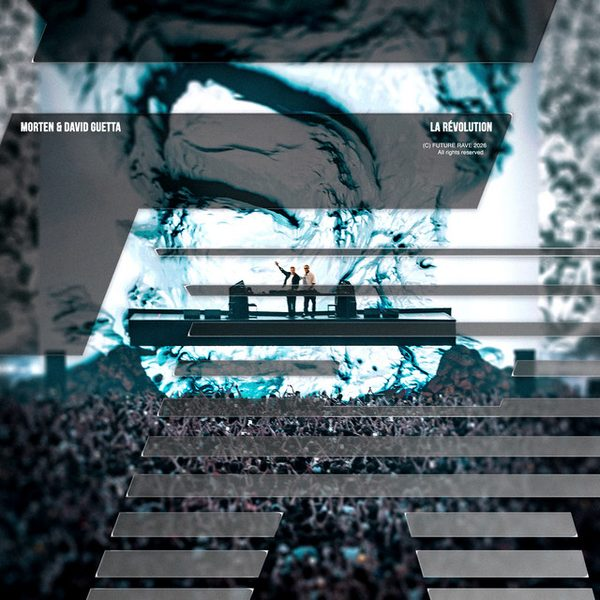
5 La RévolutionMORTEN & David Guetta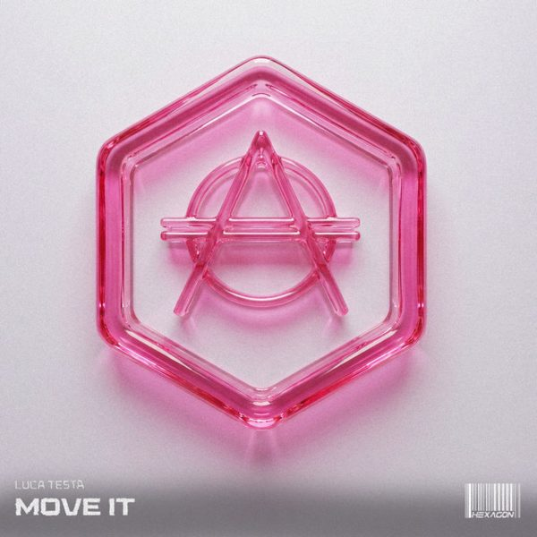
6 Move ItLuca Testa 7 House RulesFederico Scavo, Lexa Hill 8 Airplane ModeTujamo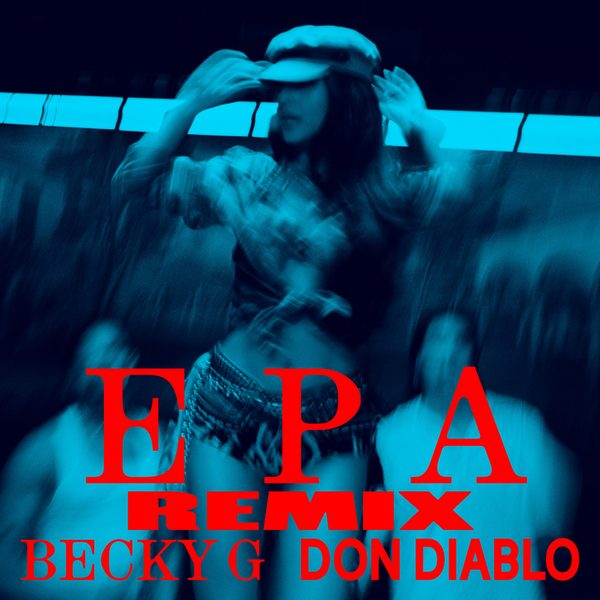
9 EPA (Don Diablo Remix)Becky G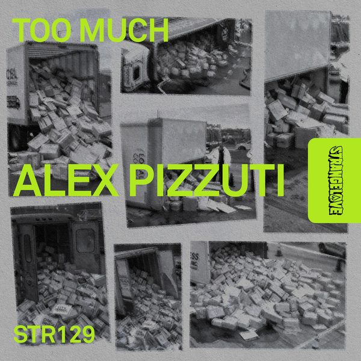
10 Too MuchAlex Pizzuti 11
Blow Ya MindAC Slater x Lock ‘N' Load
11
Blow Ya MindAC Slater x Lock ‘N' Load
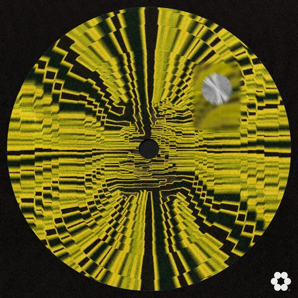
12 GRITSuray Sertin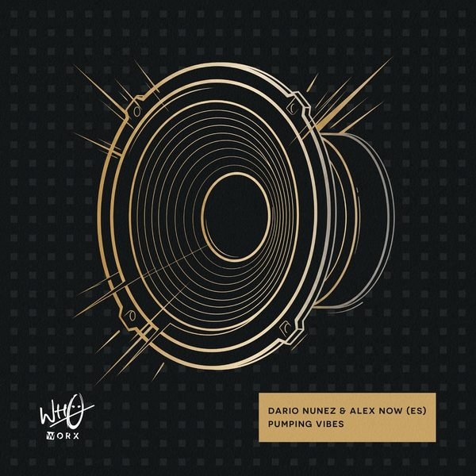
13 Pumping VibesDario Núnez & Álex Now (ES)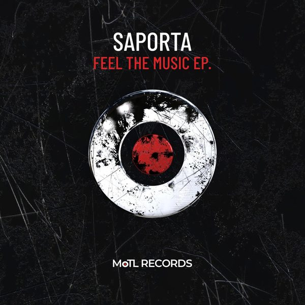
14 Feel The MusicDavid Tort, Saporta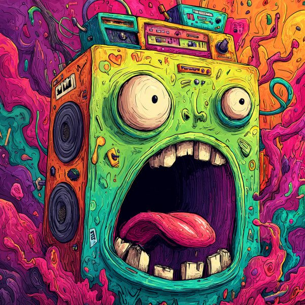
15 Lets Do ItFeelGood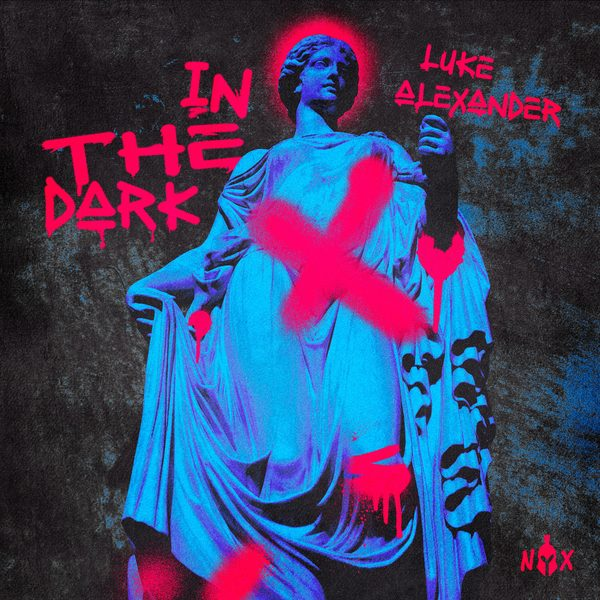
16 In The DarkLuke Alexander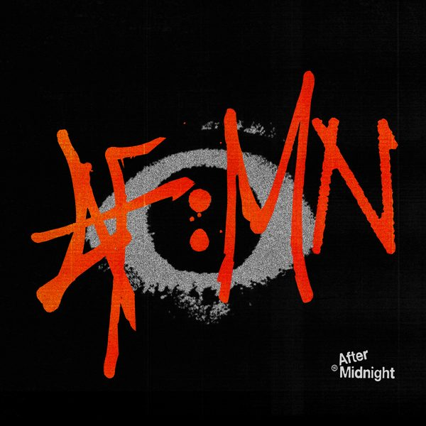
17 Hat & ShadesAFTER MIDNIGHT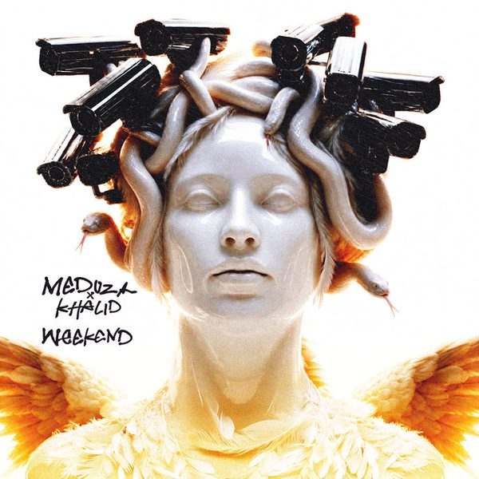
18 WeekendMEDUZA, KhalidLa tracklist
- 1 Looney Tunes Andrea Oliva, Franc Fala, BanKr Armada Music
- 2 Hate The Bomb KINDERLOMAS, CHICCA LEAF X MAIO Maio Records
- 3 Coco Calego Aura Records Music
- 4 Allein AFROJACK & Gil Glaze Spinnin' Records
- 5 La Révolution MORTEN & David Guetta Future Rave
- 6 Move It Luca Testa Hexagon
- 7 House Rules Federico Scavo, Lexa Hill Defected Records
- 8 Airplane Mode Tujamo CITY STARS RECORDS
- 9 EPA (Don Diablo Remix) Becky G RCA Records
- 10 Too Much Alex Pizzuti Toolroom Records
- 11 Blow Ya Mind AC Slater x Lock ‘N' Load Armada Music
- 12 GRIT Suray Sertin CIRCA Recordings
- 13 Pumping Vibes Dario Núnez & Álex Now (ES) Wh0 Worx
- 14 Feel The Music David Tort, Saporta MoTL Records
- 15 Lets Do It FeelGood Delicious Recordings
- 16 In The Dark Luke Alexander Myth of NYX
- 17 Hat & Shades AFTER MIDNIGHT After Midnight
- 18 Weekend MEDUZA, Khalid Universal-Island Records